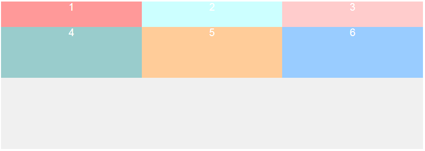

传统盒模型
文档流布局
最基本的布局方式，就是按照文档的顺序一个一个显示出来，块元素独占一行，行内元素共享一行
浮动布局
浮动方式布局就是使用 float 属性，使元素脱离文档流，浮动起来
什么情况下需要清除浮动？
父元素没有高度（指的是不设值，height:0不算）的情况下，里面的子元素都设置了浮动
只要浮动在一个有高度的盒子中，那么这个浮动就不会影响后面的浮动元素。
但是网页制作中，高度height很少出现。为什么？因为能被内容撑高！
清除浮动的3种办法
1、 尾元素清除浮动。给父元素加上clearfix这个类即可1
2
3
4
5
6
7
8
9
10
11
12//在类名为clearfix的元素后面加入内容
.clearfix:after{
content:"";
height:0;
line-height:0;
display:block;
clear:both;
visibility:hidden;
}
.clearfix{
zoom:1; //因为IE6不支持:after伪类。它的效果和height:1%一样
}
2、在浮动元素后面加空标签（设clear:both）
3、给没有设置高度的父元素设置overflow:hidden
一个父元素不能被自己浮动的子元素，撑出高度。但是，只要给父元素加上overflow:hidden; 那么，父元素就能被子元素撑出高了。
定位布局
通过 position 属性来进行定位
flex 布局
仅仅通过上述的三种布局方式还是有一些缺陷，比如我们不能只使用一个属性来实现垂直居中布局，所以就产生了第四种布局方式：flex 布局。
flex是什么
2009年w3c提出的一种可以简洁、快速弹性布局的属性。主要思想是给予容器控制内部元素高度和宽度的能力
Flex 是 Flexible Box 的缩写，意为”弹性布局”，用来为盒状模型提供最大的灵活性。
注意其浏览器的兼容性，flex 只支持 ie 10+，所有还是要根据你的项目情况使用（没错，我们要求至少 ie 9）
使用 flex 布局
flex 的使用方法很简单，只需要将其 display 属性设置为 flex 就可以，也可以设置行内的 flex，记得 Webkit 内核的浏览器，必须加上 -webkit 前缀。注意，设为 Flex 布局以后，子元素的 float、clear 和 vertical-align 属性将失效。
1 | .box { |
在 flex 中，最核心的概念就是容器和轴，所有的属性都是围绕容器和轴设置的。其中，容器分为父容器和子容器。轴分为主轴和交叉轴（主轴默认为水平方向，方向向右，交叉轴为主轴顺时针旋转 90°）。
在使用 flex 的元素中，默认存在两根轴：水平的主轴（main axis）和垂直的交叉轴（cross axis）
主轴开始的位置称为 main start，主轴结束的位置称为 main end。
同理，交叉轴开始的位置称为 cross start，交叉轴结束的位置称为 cross end。
在使用 flex 的子元素中，占据的主轴空间叫做 main size，占据的交叉轴空间叫做 cross size。
父容器属性
- flex-direction：主轴的方向（即项目的排列方向
- flex-wrap：超出父容器子容器的排列样式。
- flex-flow：
flex-direction属性和flex-wrap属性的简写形式。 - justify-content：子容器在主轴的排列方向。
- align-items：子容器在交叉轴的排列方向。
- align-content：多根轴线的对齐方式。
flex-direction 属性
flex-direction属性决定主轴的方向（主轴的方向不一定是水平的，这个属性就是设置主轴的方向，主轴默认是水平方向，从左至右，如果主轴方向设置完毕，那么交叉轴就不需要设置，交叉轴永远是主轴顺时针旋转 90°）。
2
3
4
5
6
flex-direction: row; //默认值，主轴为水平方向，起点在左端
flex-direction: row-reverse; //主轴为水平方向，起点在右端
flex-direction: column; //主轴为垂直方向，起点在上沿
flex-direction: column-reverse; //主轴为垂直方向，起点在下沿
}
flex-wrap 属性
flex-wrap 属性决定子元素如果一条轴线排不下，如何换行1
2
3
4
5.box {
flex-wrap: nowrap; // 默认，不换行
flex-wrap: wrap; // 换行，第一行在上方。
flex-wrap: wrap-reverse // 换行，第一行在下方。
}

flex-flow 属性
flex-flow 属性是flex-direction属性和flex-wrap属性的简写形式，默认值为row nowrap。1
2
3.box {
flex-flow: <flex-direction> || <flex-wrap>;
}
justify-content 属性
justify-content 属性定义了子容器在主轴上的对齐方式。1
2
3
4
5
6
7.box{
justify-content: flex-start; // 默认，左对齐
justify-content: flex-end; // 右对齐
justify-content: center; // 居中
justify-content: space-between; // 两端对齐，项目之间的间隔都相等。
justify-content: space-around; // 每个项目两侧的间隔相等。所以，项目之间的间隔比项目与边框的间隔大一倍。
}
align-items 属性
align-items属性定义子容器在交叉轴上如何对齐。
具体的对齐方式与交叉轴的方向有关，下面假设交叉轴从上到下。
1 | .box{ |
align-content 属性
align-content 属性定义了多根轴线的对齐方式。如果项目只有一根轴线，该属性不起作用。1
2
3
4
5
6
7
8.box{
align-content: flex-start; // 与交叉轴的起点对齐
align-content: flex-end; // 与交叉轴的终点对齐。
align-content: center; // 与交叉轴的中点对齐。
align-content: space-between;// 与交叉轴两端对齐，轴线之间的间隔平均分布。
align-content: space-around; // 每根轴线两侧的间隔都相等。所以，轴线之间的间隔比轴线与边框的间隔大一倍。
align-content: stretch; // 默认 轴线占满整个交叉轴。
}
子容器属性
子容器也有 6 个属性：
- order：子容器的排列顺序
- flex-grow：子容器剩余空间的拉伸比例
- flex-shrink：子容器超出空间的压缩比例
- flex-basis：子容器在不伸缩情况下的原始尺寸
- flex：子元素的 flex 属性是 flex-grow,flex-shrink 和 flex-basis 的简写
- align-self
order属性
order属性定义项目的排列顺序。数值越小，排列越靠前，默认为0。1
2
3.item {
order: <integer>;
}
flex-grow属性
flex-grow 属性定义项目的放大比例，默认为0，即如果存在剩余空间，也不放大。设置 flex-grow: 1 代表剩余空间要分配给该元素。1
2
3.item {
flex-grow: <number>; /* default 0 */
}
flex-shrink属性
flex-shrink 属性定义了项目的缩小比例，默认为1，即如果空间不足，该项目将缩小。]1
2
3.item {
flex-shrink: <number>; /* default 1 */
}
flex-basis属性
flex-basis 属性定义了在分配多余空间之前，项目占据的主轴空间（main size）。浏览器根据这个属性，计算主轴是否有多余空间。它的默认值为auto，即项目的本来大小。1
2
3.item {
flex-basis: <length> | auto; /* default auto */
}
flex 属性
子元素的 flex 属性是 flex-grow,flex-shrink 和 flex-basis 的简写，默认值为 0 1 auto。后两个属性可选。
该属性有两个快捷值：auto (1 1 auto) 和 none (0 0 auto)。
2
3
flex: none | [ <'flex-grow'> <'flex-shrink'>? || <'flex-basis'> ]
}
align-self属性
align-self 属性允许单个项目有与其他项目不一样的对齐方式，可覆盖align-items属性。默认值为auto，表示继承父元素的align-items属性，如果没有父元素，则等同于stretch。1
2
3
4
5
6
7
8.box{
align-self: auto; // 继承父元素的 align-items 属性
align-self: flex-start; // 交叉轴的起点对齐。
align-self: flex-end; // 交叉轴的终点对齐。
align-self: center; // 交叉轴的中点对齐。
align-self: baseline; // 项目的第一行文字的基线对齐。
align-self: stretch; // 默认，如果项目未设置高度或设为auto，将占满整个容器的高度。
}
grid布局
flex 布局虽然强大，但是只能是一维布局，如果要进行二维布局，那么我们还需要使用 grid。
grid 布局又称为“网格布局”，可以实现二维布局方式，和之前的 表格table布局差不多，然而，这是使用 CSS 控制的，不是使用 HTML 控制的，同时还可以依赖于媒体查询根据不同的上下文得新定义布局。
没有 HTML 结构的网格布局有助于使用流体、调整顺序等技术管理或更改布局。通过结合 CSS 的媒体查询属性，可以控制网格布局容器和他们的子元素，使用页面的布局根据不同的设备和可用空间调整元素的显示风格与定位，而不需要去改变文档结构的本质内容。
浏览器兼容性
桌面浏览器
移动端 / 平板
除了微软之外，浏览器制造商在 Grid 规范完全落地以前似乎并没有放手让 Gird 野生也长的打算。 这是一件好事，这意味着我们不需要再去学习各种浏览器兼容版本的旧语法。
在生产环境中使用Grid只是时间问题，但现在是我们该学习的时候了.
grid 网格布局中的基本概念
此部分直接摘自CSS Grid布局：什么是网格布局
网格线(Grid Lines)
网格线组成了网格，他是网格的水平和垂直的分界线。一个网格线存在行或列的两侧。我们可以引用它的数目或者定义的网格线名称。
网格轨道(Grid Track)
网格轨道是就是相邻两条网格线之间的空间，就好比表格中行或列。所在在网格中其分为grid column和grid row。每个网格轨道可以设置一个大小，用来控制宽度或高度。
网格单元格(Grid Cell)
网格单元格是指四条网格线之间的空间。所以它是最小的单位，就像表格中的单元格。
网格区域(Grid Area)
网格区域是由任意四条网格线组成的空间，所以他可能包含一个或多个单元格。相当于表格中的合并单元格之后的区域。
使用grid布局
使用 grid 布局很简单，通过display属性设置属性值为 grid 或 inline-grid 或者是 subgrid（该元素父元素为网格，继承父元素的行和列的大小） 就可以了。
网格容器中的所有子元素就会自动变成网格项目（grid item），然后设置列（grid-template-columns）和 行（grid-template-rows）的大小，设置 grid-template-columns 有多少个参数生成的 grid 列表就有多少个列。
注：当元素设置了网格布局，column、float、clear、vertical-align属性无效。1
2
3
4.container {
grid-template-columns: <track-size> ... | <line-name> <track-size> ...;
grid-template-rows: <track-size> ... | <line-name> <track-size> ...;
}
如果没有设置 grid-template-columns，那么默认只有一列，宽度为父元素的 100%，例如
为了帮助我们更好的理解，在每个 items(子元素) 加上了单独的 class ：1
2
3
4
5
6
7
8<div class="wrapper">
<div class="item item1">1</div>
<div class="item item2">2</div>
<div class="item item3">3</div>
<div class="item item4">4</div>
<div class="item item5">5</div>
<div class="item item6">6</div>
</div>
(如果未显示的给网格线命名)，轨道值之间仅仅有空格时，网格线会被自动分配数字名称：1
2
3
4
5
6
7
8
9
10
11
12
13
14
15
16.grid-container{
display: grid;
background:#f0f0f0;
grid-template-rows: 50px 80px 100px;
}
.item{
color: #fff;
text-align: center;
font-size: 20px;
}
.item1{background: #FF9999;}
.item2{background: #CCFFFF;}
.item3{background: #FFCCCC;}
.item4{background: #99CCCC;}
.item5{background: #FFCC99;}
.item6{background: #99CCFF;;}
显示如下
设置了 grid-template-columns 的话，设置了几个参数，就有几列（不超过 grid item 的个数），然后设置的 grid-template-rows 参数就是每一列的高度（超出列数的高度无效）1
2
3
4
5
6
7
8
9
10
11.grid-container{
display: grid;
background:#f0f0f0;
grid-template-rows: 50px 100px 60px 80px;
grid-template-columns: 50px 40px 100px 80px;
}
.item{
color: #fff;
text-align: center;
font-size: 20px;
}
虽然我们设置了四个 grid-template-rows，但是因为只有两行，所以只有前两个值生效。效果如下：
css fr 单位是一个自适应单位，fr单位被用于在一系列长度值中分配剩余空间，如果多个已指定了多个部分，则剩下的空间根据各自的数字按比例分配。
“fr”单位允许我们将轨道大小设置为网格容器自由空间的一部分。 例如，下面的代码会将每个 grid item 为 grid container 宽度的三分之一：1
2
3
4
5
6.grid-container{
display: grid;
background:#f0f0f0;
grid-template-rows: 50px 100px 60px 80px;
grid-template-columns: 1fr 1fr 1fr;
}
效果如下

重复行或者列
repeat() 属性可以创建重复的网格轨道。这个适用于创建相等尺寸的网格项目和多个网格项目。repeat() 也接受两个参数：第一个参数定义网格轨道应该重复的次数，第二个参数定义每个轨道的尺寸。1
2
3
4
5
6.grid-container{
display: grid;
grid-template-columns: repeat(2,100px);
grid-template-rows: repeat(3,100px);
background: #f0f0f0;
}
效果如下
间距
grid-column-gap：创建列与列之间的距离。grid-row-gap：行与行之间的距离。
显示如下
或者使用 grid-gap 是 grid-row-gap 和 grid-column-gap两个属性的缩写。
通过网格线定位 grid item
justify-items 属性
沿着行轴对齐网格内的内容（与之对应的是 align-items, 即沿着列轴对齐），该值适用于容器内的所有的 grid items。1
2
3
4
5
6.container {
justify-items: start; //内容与网格区域的左端对齐
justify-items: end; //内容与网格区域的右端对齐
justify-items: center; //内容位于网格区域的中间位置
justify-items: stretch; //默认值,内容宽度占据整个网格区域空间
}
我们可以通过表格线行或者列来定位 grid item。比如：1
2
3
4
5
6
7
8
9
10
11
12
13
14
15
16
17
18
19.grid-container{
display: grid;
grid-template-columns: repeat(2,100px);
grid-template-rows: repeat(3,100px);
background: #f0f0f0;
}
.item{
color: #fff;
text-align: center;
font-size: 20px;
}
.item1{
grid-row-start: 2;
grid-row-end: 3;
grid-column-start: 2;
grid-column-end: 3;
background: #fffa90;
color: #000;
}
效果如下
grid-row 是 grid-row-start 和 grid-row-end 的简写。grid-column 是 grid-column-start 和 grid-column-end 的简写。
如果只提供一个值，指定了 grid-row-start 和 grid-column-start 的值。
如果提供两个值，第一个值是 grid-row-start 或者 grid-column-start 的值，第二个值是 grid-row-end 或者 grid-column-end 的值，两者之间必须要用/隔开。1
2grid-row: 2;
grid-column: 3 / 4;
这四个值可以用 grid-area 缩写，分别对应 grid-row-start、grid-column-start、grid-row-end、grid-column-end：1
grid-area: 2 / 2 / 3 / 3;
合并单元行与合并单元列
初始版1
2
3
4grid-column-start: 1;
grid-column-end: 3;
grid-row-start: 2;
grid-row-end: 4;
也可以使用 grid-row 和 grid-column 简写的形式，关键词 span 后面紧随数字，表示合并多少个列或行，/ 前面是从第几行/列开始1
2grid-row: 2 / span 3;
grid-column: span 2;
1 | .grid-container{ |
效果如下
自定义网格线名称
在 grid 中，是可以自定义网格线的名称的，然后使用定义好的网格线来进行布局，[col1-start] 网格线名称一定要使用 [] 括住。
ps: 一个网格线可以有不止一个名字。例如，这里第2条网格线有两个名字：row1-end 和 row2-start：1
2
3.container {
grid-template-rows: [row1-start] 25% [row1-end row2-start] 25% [row2-end];
}
1 | .grid-container{ |
效果如下
通过网格区域命名和定位网格项目
什么是网格区域：
网格区域(grid-area)是一个逻辑空间，主要用来放置一个或多个网格单元格（Grid Cell）。他是由四条网格线(Grid line)，网格区域每边一条，四边相交组织的网格轨道(Grid Track)。简单点理解，网格区域是有四条网格线交织组成的网格空间，这个空间中可能是一个网格单元格，也可能是多个网格单元格
定义网格区域
在CSS Grid Layout中定义网格区域有两种方式，一种是通过网格线来定义，另一种是通过grid-template-areas来定义。接下来看看两种定义网格区域的方法在具体使用过程中有何不同。
网格线定义网格区域
使用网格线定义网格区域的方法非常的简单，首先依赖于 grid-template-columns 和 grid-template-rows 显式定义网格线，甚至是由浏览器隐式创建网格线，然后通过 grid-area 属性通过取网格线，组成网格线交织区域，那么这个区域就是所讲的网格区域。在使用 grid-area 属性调用网格线，其遵循的规则是 grid-area: row-start/ column-start / row-end / column-end。
grid-template-areas 定义网格区域
通过引用 grid-area属性指定的网格区域的名称来定义网格模板。 重复网格区域的名称导致内容扩展到这些单元格。 点号表示一个空单元格。 语法本身提供了网格结构的可视化。1
2
3
4
5
6<div class="grid-container">
<div class="header ">header</div>
<div class="content ">content</div>
<div class="sidebar ">sidebar</div>
<div class="footer ">footer</div>
</div>
1 | .grid-container{ |
效果如下
我发现这样布局的一个优点，在不设置高度的情况下（父容器和 grid-template-rows 的值，或者 grid-template-rows 设置为 auto 时，slider 和 content 的高度是一致的，并且会根据其内的高度自适应）
css常用布局
CSS实现水平居中
一般水平居中还是比较容易的，我一般都是先看子元素是固定宽度还是宽度未知
固定宽度
这种方式是绝对定位居中，除了使用 margin，我们还可以使用 transform[注意]IE9-浏览器不支持
1 | .container{ |
1 | .container{ |
也可以使用margin: 0 auto;但是第一种方法全兼容哦
宽度未知
将子元素的display为table，使子元素成为块级元素，同时table还具有包裹性，宽度由内容撑开1
2
3
4.inner{
display: table;
margin: 0 auto;
}
在父元素中设置text-align:center，子元素设置display:inline-block;实现行内元素水平居中1
2
3
4
5
6
7
8
9
10.container{
width: 300px;
height: 200px;
background: #09f;
position: relative;
text-align: center;
}
.inner{
display: inline-block;
}
多个块状元素
上面的方式即使子元素不止一个也想实现水平居中也是有效的，（宽度固定不固定都可，不固定的话就不需要设置宽度，会被自动撑开，但是要考虑到撑爆的情况）例如：1
2
3
4
5
6
7
8
9
10
11
12
13
14
15.container{
width: 250px;
height: 200px;
background: #09f;
position: relative;
text-align: center;
padding: 20px;
}
.inner{
display: inline-block;
width: 50px;
height: 150px;
margin: 0 auto;
background: #fff;
}
使用弹性盒模型flex实现水平居中[注意]IE9-浏览器不支持
【1】在伸缩容器上设置主轴对齐方式jusify-content:center
【2】在伸缩项目上设置margin: 0 auto
1 | <style> |
固定高度
单行行内元素
单行行内元素居中，只需要将子元素的行高等于高度就可以了
1 | .container { |
多行元素
多行元素不能像上面设置line-height了，对于多行的行内元素是处理不了的，可以把一些 div 的显示方式设置为表格，因此我们可以使用表格的 vertical-align property 属性
1 | .container { |
table-cell使用
优点：内容可以动态改变高度(不需在 CSS 中定义)。当 container 里没有足够空间时， 内容不会被截断；
缺点：Internet Explorer(甚至 IE8 beta)中无效，许多嵌套标签
还有一个方法是设置一个空的行内元素，使其 height:100%,display:inline-block,vertical-align: middle; 并且 font-size:0，要设置一个空元素，高度和父元素相等，并且设置垂直居中的属性。但是，这只是用与所有的行内元素的宽度和不超过父元素的宽度的情况
1 | <div class="container"> |
1 | .container{ |
效果如下：
还有一个方法，在需要居中的content元素前面插入一个div,设置此div height:50%; margin-bottom:-contentheight;
content清楚浮动，并显示在中间
1 | <div class="container"> |
1 | .container{ |
优点：适用于所有的浏览器，没有足够空间时(例如：窗口缩小) content 不会被截断，滚动条出现
缺点：唯一我能想到的就是需要额外的空元素了
效果如下
图片与文字居中
经常有看到设计稿是图片和文字垂直居中的，那么怎么才能让图片和文字垂直居中呢？
只需要给图片一个 vertical-align: middle; 属性就可以：
1 | <div class="container"> |
1 | .container { |
效果图如下：
圣杯布局
圣杯布局的特点
- 三列布局，中间宽度自适应，两边定宽；
- 中间栏要在浏览器中优先展示渲染；
- 允许任意列的高度最高；
效果如下
这个布局方式的关键是怎么样才能使得在伸缩浏览器窗口的时候让中间的子元素宽度改变。可以适应浏览器的宽度变化使用百分比设置宽度再合适不过，所以我们要将中间子元素的宽度设置为 100%，左边和右边的子元素设置为固定的宽度。